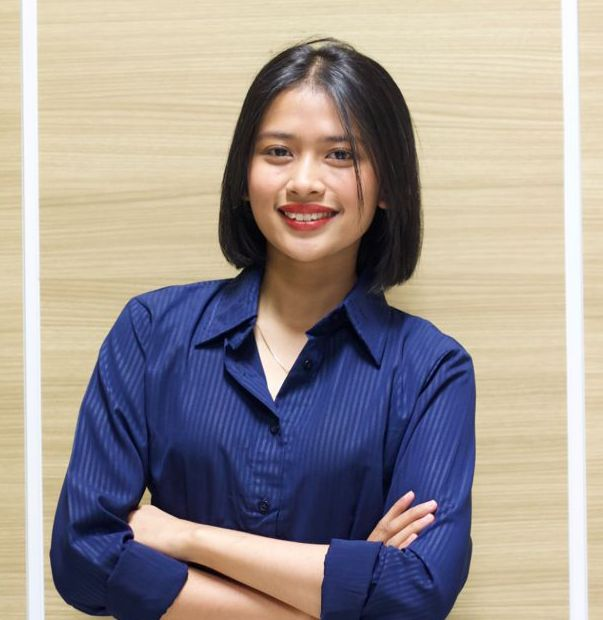

KEISHA ANGGRAINI
Profil Pribadi
Mahasiswa Sistem Informasi Universitas Telkom Jakarta yang memiliki minat kuat di bidang marketing, social media management, content creation, dan SEO writing.
Kontak
- 📍 Jakarta, Indonesia
- 📞 0851-7120-0548
- ✉️ keishaanggraini57@gmail.com
- 📷 Instagram: @keisgraini
Pendidikan
S1 Sistem Informasi
Universitas Telkom Jakarta
Expected Graduation: 2028
Ilmu Pengetahuan Sosial
SMAS PGRI 24 Jakarta
2021 – 2024
Pengalaman Organisasi & Kepanitiaan
Marketing Crew, Humas – Universitas Telkom Jakarta
Jan 2024 – Sekarang
- Merancang dan menyusun caption, storyboard, dan brief talent untuk konten media sosial.
- Berinteraksi dengan calon mahasiswa baru untuk memberikan informasi kampus.
- Membuat konten promosi offline (poster, flyer, dokumentasi event kampus).
Panitia Event, Humas – INFORVATION
Mar 2024 – Sekarang
- Melakukan promosi konten untuk mencapai target yang ditentukan.
- Mengelola akun Instagram & TikTok (copywriting, content planner, editing reels, pengambilan konten).
- Merencanakan ide konten Instagram 2x per minggu.
Admin Media Komunitas – Universitas Telkom Jakarta
Jun 2023 – Seka
- Meninjau konten sebelum dipublikasikan untuk memastikan kualitas & relevansi.
- Memastikan konten sesuai pedoman komunitas & etika organisasi.
- Menindak konten yang melanggar (hapus, revisi, lapor).
Marketing Dana Usaha (Freelance) – @syawbiy & @ecaja
Apr 2023 – Jul 2024
- Menawarkan produk melalui live, membuat konten video, upload produk, dan memahami traffic iklan di Shopee.
- Membawakan live streaming produk preloved (Shopee Live & Instagram) dengan peningkatan penjualan 15% per sesi.
- Mengelola interaksi dengan lebih dari 70 penonton per hari.
Keahlian
- Software Desain: Ms. Office Suite, Capcut, Alight Motion, Ibis Paint, Canva
- Hard Skills: Social Media Management, Marketing, Content Strategy, Copywriting, Content Writing
- Soft Skills: Detail-oriented, Kreatif, Komunikasi, Kerjasama tim, Pemecahan masalah, Manajemen waktu
- Bahasa: Indonesia (Native), Inggris (Intermediate)